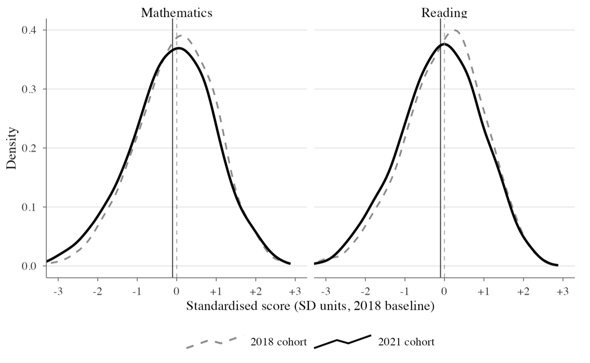
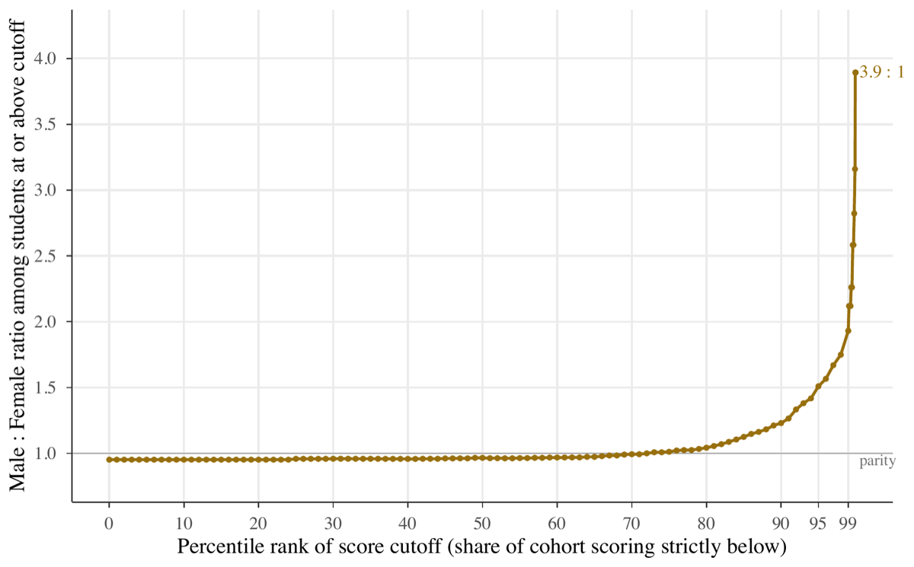
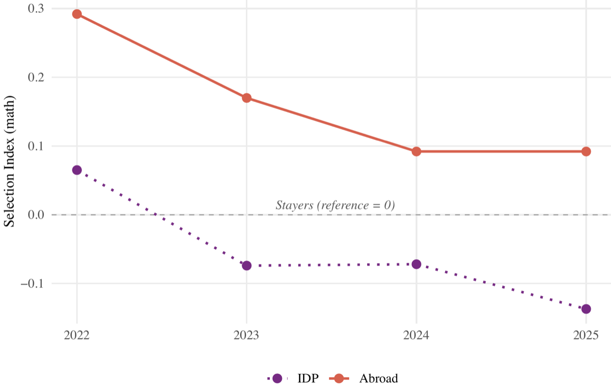
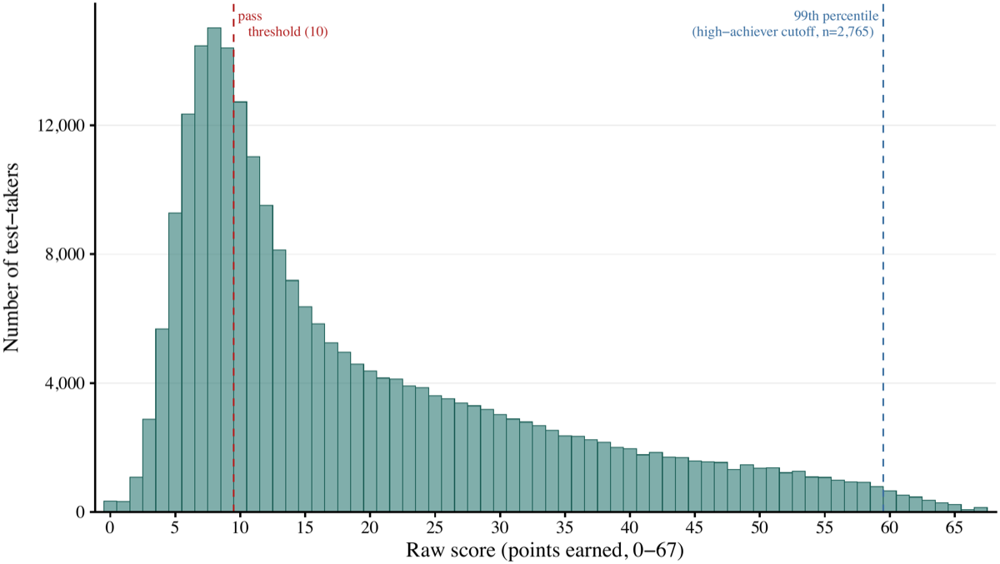
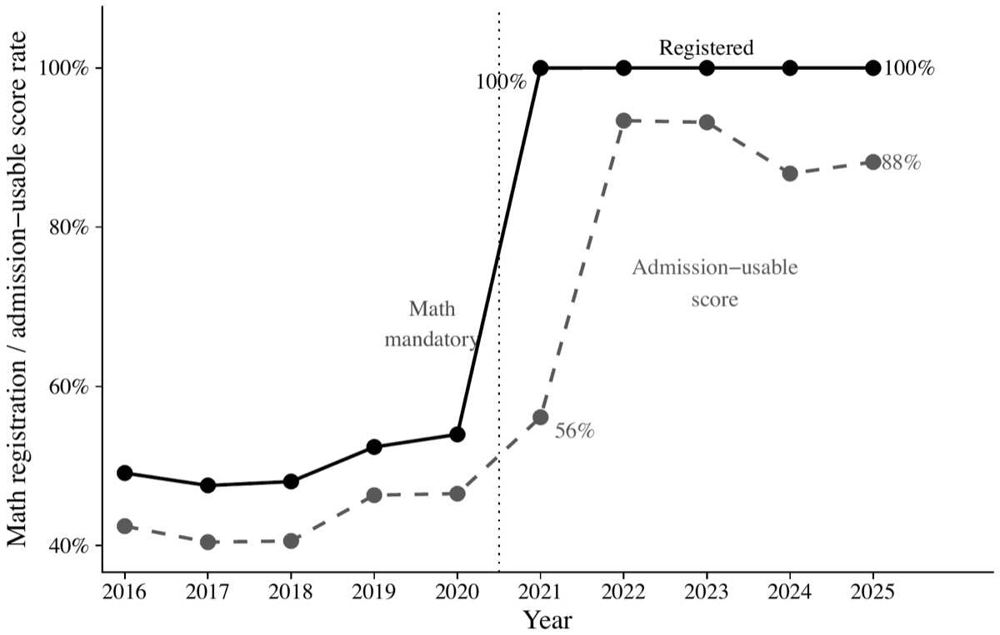

About me
I am a PhD candidate in Economics at Central European University in Vienna.
My research interests are labor economics, economics of education, and applied econometrics. I use large-scale administrative data to study how schools, exams, and education policy shape student achievement and educational choices, with a focus on Ukraine.
Research
Working papers
The COVID-19 Shock to Primary Education: Cross-Cohort Evidence from Ukraine’s State Monitoring Programme
Estimates learning losses from COVID-19 disruptions using standardized math and reading assessments from Ukraine’s National Monitoring of Primary Education, comparing adjacent cohorts and exploiting cross-school variation in exposure to remote instruction.
SSRN Working Paper, November 2025. SSRN


The Gender Gap in Upper-Tail Math Achievement: Evidence from Ukraine
Uses Ukraine’s mandatory national ZNO math exam to show that the male-to-female ratio among top scorers widens steadily, reaching 3.9 to 1 at the 99.9th percentile, and that the gap arises on a conversion rather than an access margin.
Working paper, October 2026. PDF


Work in progress
Who Left and Who Stayed: Displacement, Selection, and Brain Drain in Wartime Ukraine
Uses national exam microdata for 2016–2025 to document which students left after Russia’s full-scale invasion, comparing the selection of students who emigrated with those who were internally displaced.


Schools and High Math Achievement: Evidence from Ukraine
Examines whether cross-school differences in producing top math achievers reflect school environments rather than student selection, using near-universal national exam data linked to school administrative records, including Ukraine’s specialized physics and math (fizmat) lyceums.


Compulsory Mathematics and STEM Access: Evidence from Ukraine
Studies Ukraine’s 2021 reform that made the mathematics exam compulsory, expanding eligibility for STEM university programs. STEM applications rose after the reform, but more for male than for female students, so wider eligibility did not narrow the gender gap in STEM choice.


Comparative Advantage and the Gender Gap in STEM
Studies whether students’ comparative advantage in math relative to language shapes which university programs they apply to in Ukraine, and how much of the gender gap in STEM applications it explains at each stage of the path to university.
Publications
The GeGaLo Index: Geopolitical Gains and Losses after Energy Transition
Energy Policy, 2019. Co-author.
Contact
Department of Economics, Central European University, Vienna, Austria